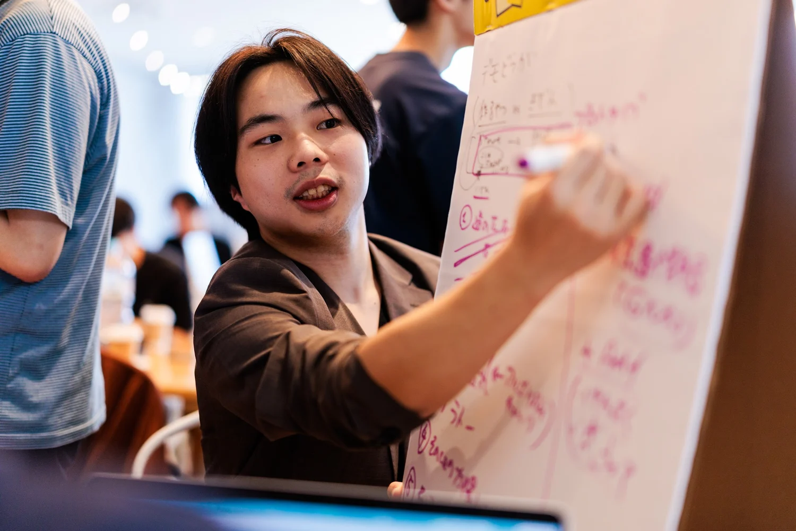
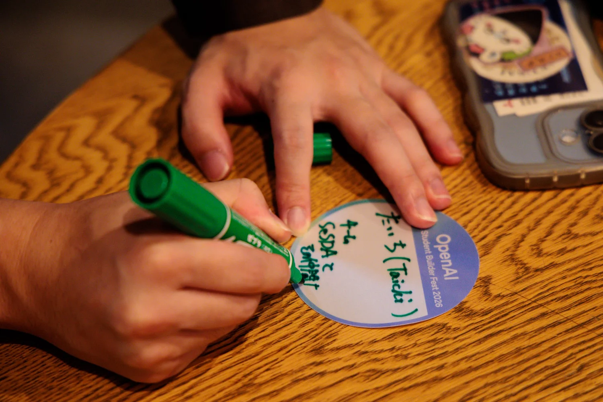
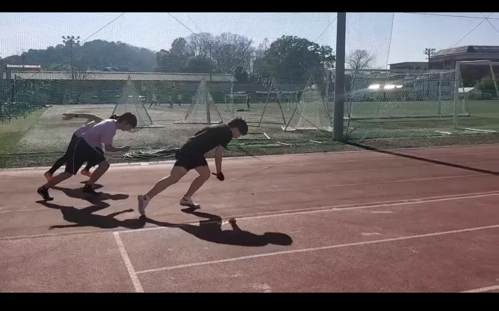
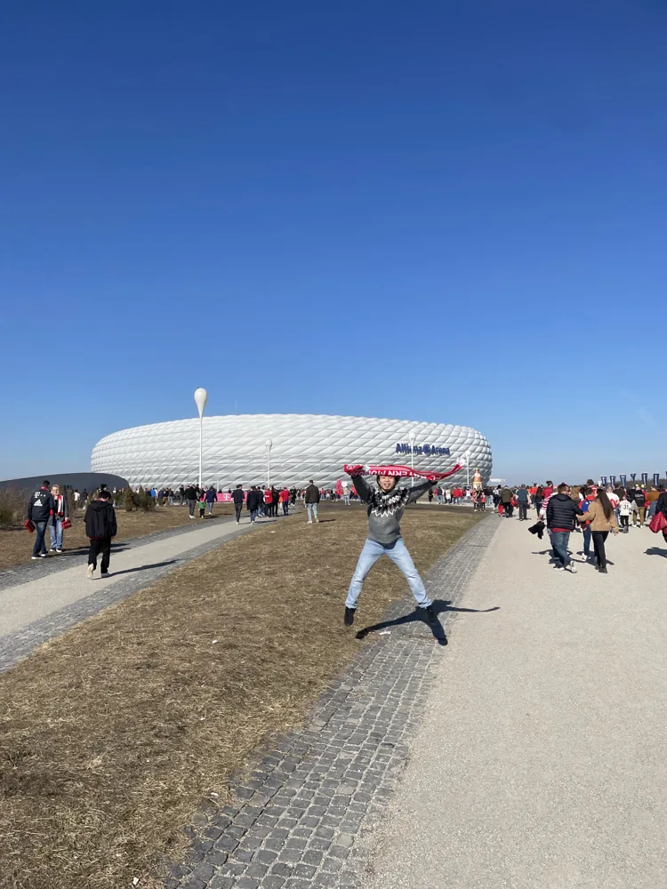
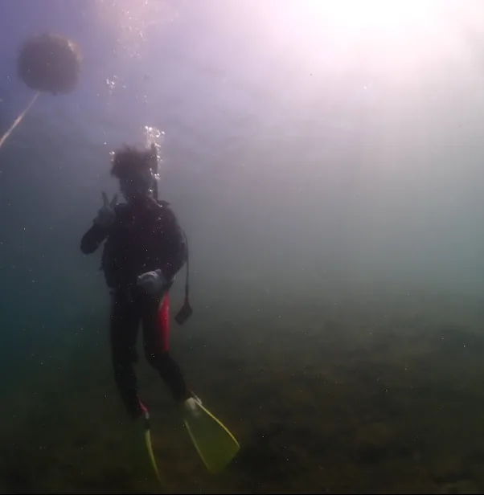

外惑星探査のミッション設計と軌道最適化
超小型外惑星探査機による多点同時観測のミッション設計と、Julia・DDPを用いた低推力軌道最適化。
AEROSPACE · ROBOTICS · CONTROL
内田 大智 / KYOTO, JAPAN
京都大学 工学部物理工学科 宇宙基礎工学コースの学部4年生。ミッション設計、軌道最適化、ロボティクスを研究しています。
01 ABOUT
JAXA宇宙科学研究所でミッション設計と低推力軌道最適化、京都大学で学習モデルを用いた制御と月面ロボットの研究に取り組んでいます。
これまでに、ドイツのDFKIでロボットアームの制御、米国のジョージア工科大学でメタゲノム解析、東京工業大学地球生命研究所で好塩性古細菌の研究を経験しました。
02 RESEARCH & PROJECTS
研究とソフトウェア開発の内容を、分野別に掲載しています。
超小型外惑星探査機による多点同時観測のミッション設計と、Julia・DDPを用いた低推力軌道最適化。
Transformerで同定したモデルと非線形モデル予測制御を組み合わせ、ラジコンカーの実時間自動追従を実機に実装。
月面探査用の多脚モジュールロボットを対象に、強化学習・逆運動学・Sim-to-Real環境を研究。
宇宙デブリ捕獲を背景に、7自由度アームの物理シミュレーション環境とインピーダンス・位置制御器を開発。
京都大学医学部陸上部に向けて、React・Firebaseによる競技記録管理アプリを設計・開発・運用。
ロシア語学習を支援する文法誤り訂正AIと、学習データ生成に取り組むエンジニアインターン。
重金属汚染物質の安定化に関わる微生物群集を、メタゲノムデータと統計解析から調べる。
世界各地の岩塩から好塩性古細菌を単離し、DNA解析と分子系統解析を実施。
跡見研究室で、水素・酸素の利用に関する微生物代謝のウェットラボ研究。
電子顕微鏡（SEM）による組成分析。英国の高校・大学教員との国際共同研究。
新規機構を試作し、Arduinoを用いた力センサーを設計・実装して評価。
コンピュータ制御機能と自動パラシュート展開機構を備えたロケットを開発。
03 EXPERIENCE
先端学術院 先端学術専攻 宇宙科学コース・5年一貫博士課程。尾崎直哉研究室（Mission Design Lab）。
工学部物理工学科 宇宙基礎工学コース・学部4年生。2027年3月卒業見込。
神奈川県横浜市
IB Middle Years Programme・インド ハリヤナ州
神奈川県横浜市
チームリーダーとして54時間で事業案とプロトタイプを開発。
ジョージア工科大学・DFKIへの研究派遣（全額給付）。
好塩性古細菌の研究。
極限環境微生物の研究。
Seiko SDGs Food Ambassadorの創設・運営。
競技会の全ミッションを達成。
人工重力機構の研究。
チームでの総合優勝。
インドで800m・1500m・3000mの3種目優勝。
70th UKAREN
69th JSAEM
JpGU 2022
NASA × AGI × High School Students
Japanese Society of Scientific Fisheries
International Research for School
04 INTERESTS & ACTIVITIES
2026.09.15
日陰を通る最短経路を探索する地図サービス「WalkIsFun」を3人チームで開発。PMを担当しました。





その他の趣味：ウクレレ、料理、将棋、盆栽、短歌、コーヒー。
日陰を通る最短経路を探索する地図サービス「WalkIsFun」を3人チームで開発。PMを担当しました。
外務省・日韓文化交流基金のプログラムに派遣団員として参加。
京都・国際音楽学生フェスティバルで、海外音楽家の英日通訳とアテンドを担当。
鉄緑会で難関大学志望の高校生に数学を指導。
100名以上が参加するフォーラムを創設・企画運営。
文化祭での地域産品の販売を通じて生産者・観光を支援する活動を創設。
プロジェクトを創設・運営し、2日間で3,800本のチョコバナナを販売。
第71回日本宇宙航空環境医学会・第7回Global Moon Village Workshopの運営、大学生向け宇宙医学ツアーの企画。
有機稲作への継続的な参加。少林寺拳法では全国中学生大会に出場。
科学部サミットを創設。日印学生交流の企画や、インドでの書道体験イベントを運営。
ICASプログラムで東京都議会の議員インターンに参加。
所属・活動：京都大学医学部陸上部／将棋部／京大マイコンクラブ／宇宙医学若手コミュニティ／Moon Village Association勉強会
インタビュー・3月24日号
インタビュー
インタビュー
インタビュー・紙面掲載
ACTIVITY ARCHIVE
研究、企画運営、国際交流、スポーツなど、81件の活動記録を掲載しています。